A granular governance system that balances enterprise guardrails with AI-empowered creative freedom — so marketing teams can move fast without breaking the brand.
01 — The Challenge
In large-scale B2B marketing, maintaining brand consistency is a constant battle. Senior Marketers must guarantee all communications align with brand standards — but the tools gave them no real enforcement mechanism.
Meanwhile, Junior Marketers were overwhelmed by complex tooling, often creating off-brand content or abandoning the platform entirely. Internal Oracle marketing teams had even started building proprietary tools because Fusion Marketing's governance features were inadequate.
Three Core Gaps
Design a governance solution within Oracle Fusion Marketing that allows Senior Marketers to set guardrails (constraints) while empowering Junior Marketers to launch campaigns quickly — without sacrificing brand compliance.
02 — Research
I started with a deep audit of Oracle's existing Eloqua platform, then analyzed 11 competitors to understand the landscape — and where Oracle's approach diverged.
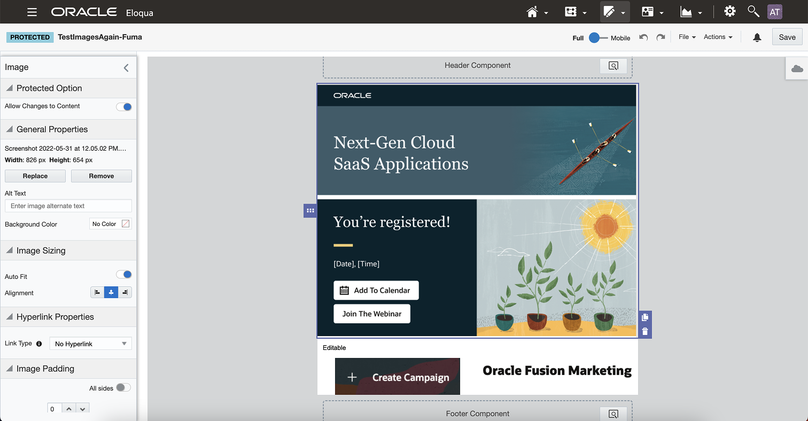
The existing Eloqua canvas — constraint controls buried in a side panel with limited locking granularity.
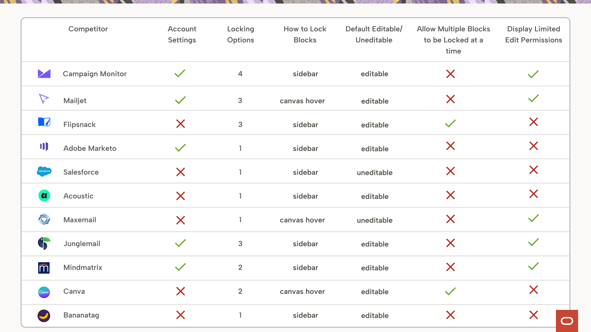
Competitive analysis across 11 platforms — 72% used a sidebar, 81% were unlocked by default.
72% of competitors placed lock controls in a sidebar. 81% defaulted to an unlocked state — giving Junior Marketers full freedom and requiring Senior Marketers to lock elements manually.
Following industry patterns, the initial plan mirrored this approach: maintain an open canvas and let Senior Marketers manually lock individual elements. This would soon need to be challenged.
03 — Users
Without direct customer access, I worked closely with product managers to build a clear picture of the two primary user types and their often-conflicting needs.
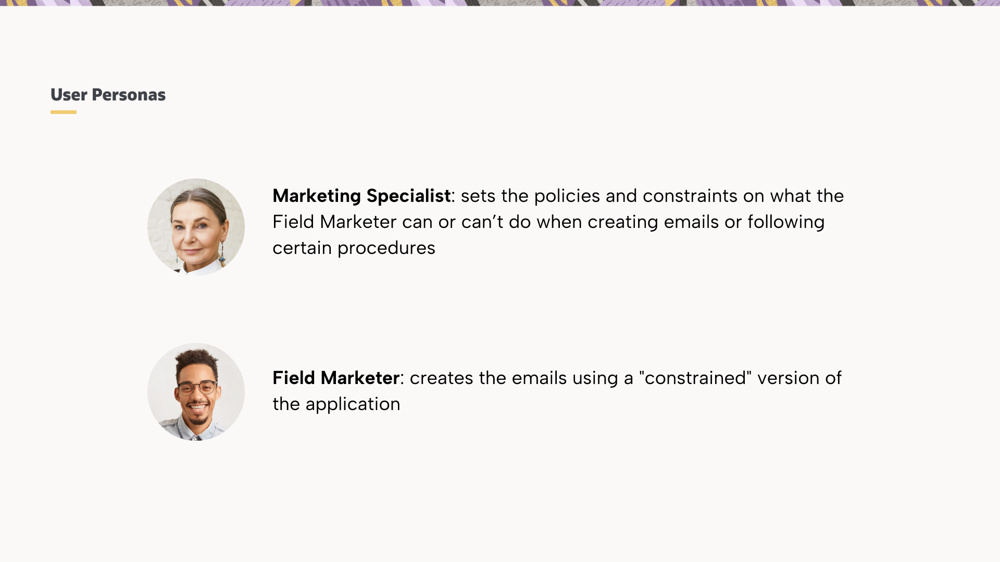
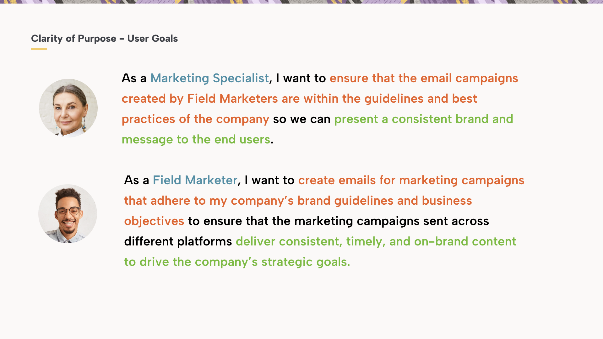
Clarity of Purpose — each user's primary goal shapes a fundamentally different relationship with the template system.
Sets policies and constraints on what Field Marketers can or can't do when creating emails. Needs confidence that brand standards are enforced — without reviewing every send manually.
Creates emails using a "constrained" version of the canvas. Needs speed and simplicity — launching on-brand campaigns quickly across platforms without needing deep design expertise.
04 — Information Architecture
The biggest information architecture challenge: how do you present dozens of lockable attributes — margins, font sizes, colors, padding — without overwhelming users into paralysis?
The solution was a three-pillar framework that grouped every email attribute into high-level "buckets," enabling both rapid governance and surgical precision.
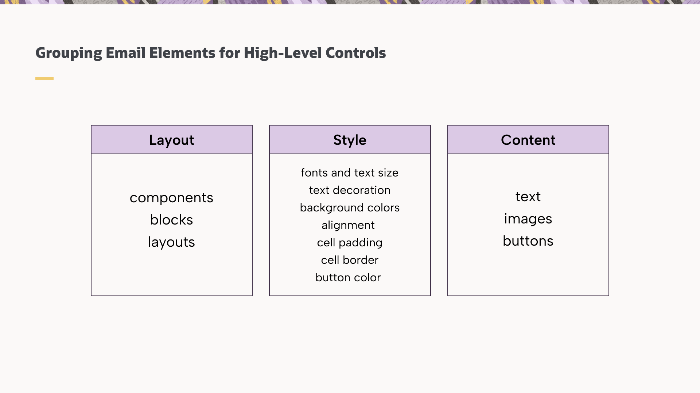
Layout, Style, and Content — three master categories that became the backbone of the constraint system.
05 — Exploration
Weeks 5–6 were about divergence — exploring the solution space broadly before committing to any direction. I tested sidebar placement for lock controls, following the 72% industry standard, with an "Unlocked by Default" mental model.
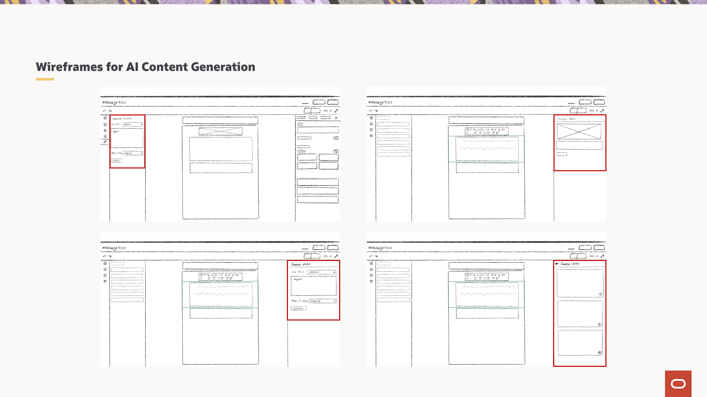
Early wireframes exploring sidebar lock controls and the AI content generation panel.
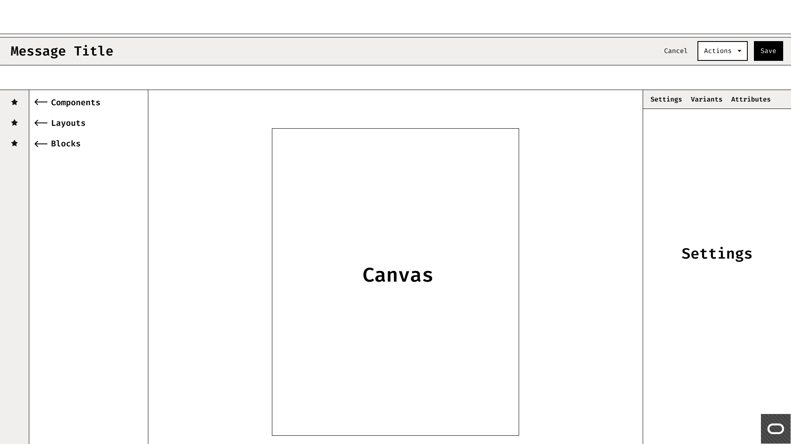
Lo-fi template selection flow for Junior Marketers — choosing a constrained template to start from.
Midway through the project, scope expanded to incorporate Generative AI capabilities. I designed a new left-panel for GenAI copy generation and an "AI Image" replacement feature — enabling Junior Marketers to generate brand-relevant assets instantly, without leaving the canvas.
06 — The Pivot
At week 7, I presented the high-fidelity "Unlocked by Default" prototype to stakeholders. The feedback was a turning point.
Stakeholders pointed out that in an enterprise context, a Junior Marketer's primary goal is speed and compliance — not total creative freedom. Junior Marketers rarely needed structural changes. Open templates meant Senior Marketers had to lock every element individually — an enormous manual burden.
The entire system logic flipped. Instead of "Unlocked by Default" with manual locking, the system became "Locked by Default." Senior Marketers would now intentionally allow editing for specific sections — a far lighter lift that aligned with how enterprise governance actually works.
Before — open canvas, no governance.
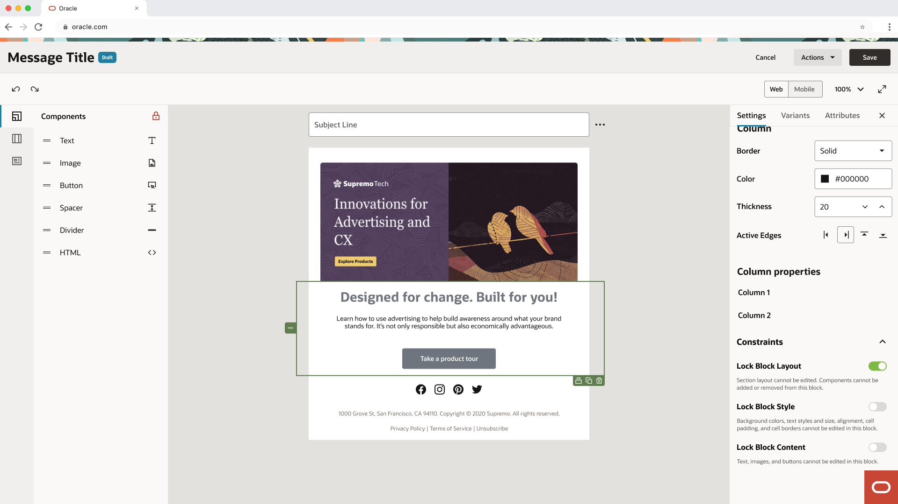
V1 — unlocked by default, sidebar locking.
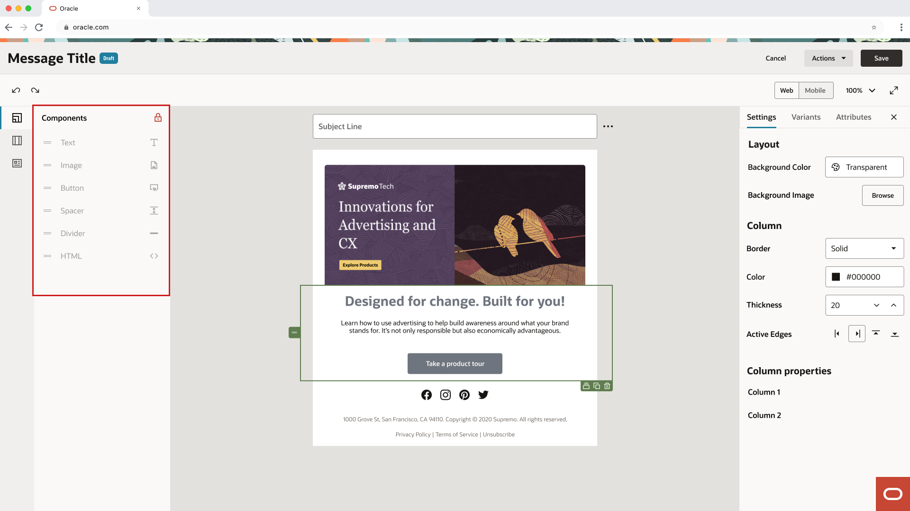
Final — locked by default, senior allows editing.
07 — The Solution
The final design introduced a streamlined "Save as Template" workflow with two-tiered governance — from high-level category toggles down to individual element locks — plus a GenAI assistant operating within brand guardrails.
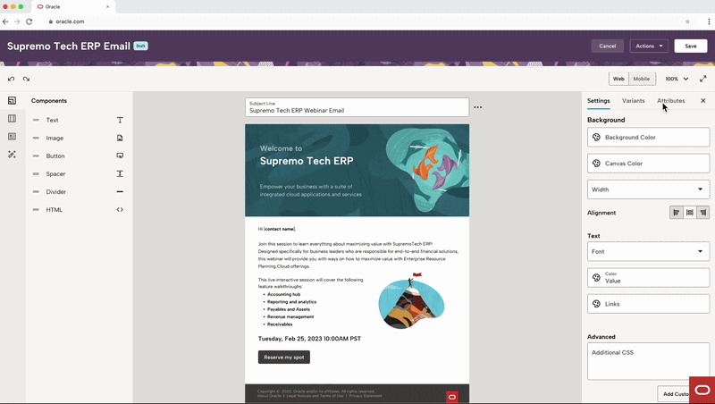
Senior Marketers save any email as a template, triggering the constraint configuration flow.
Senior Marketers begin by saving a completed email as a template. This triggers a dedicated constraint configuration flow where they define exactly what Field Marketers can and cannot change — without touching a single lock icon manually.
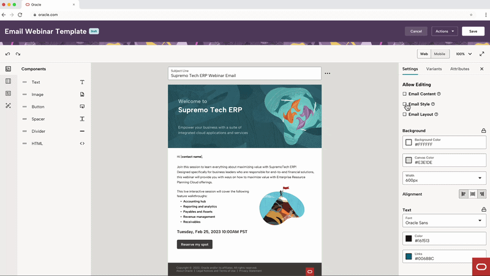
High-level category toggles first, then granular per-element locks for surgical control.
The constraint panel operates at two levels:
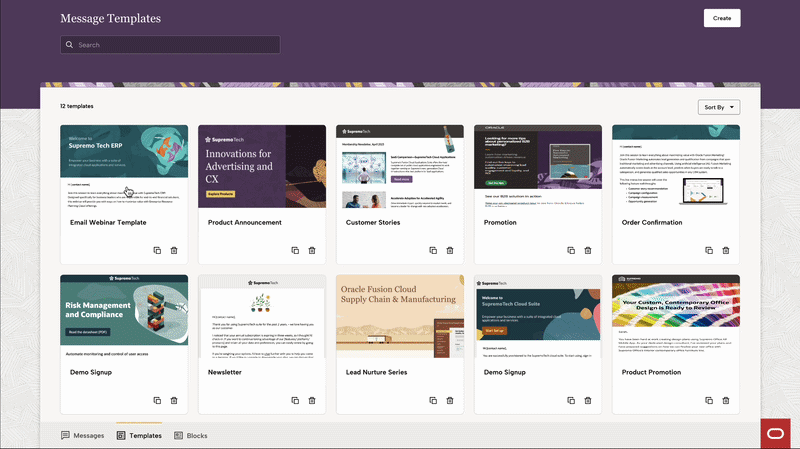
Junior Marketers see a simplified canvas — only the elements they're permitted to edit are interactive.
When a Field Marketer opens a constrained template, the canvas reflects only what they can change. Locked elements are visually distinct — no confusion, no accidental edits, no brand violations. Speed is preserved because they're not fighting the tool.
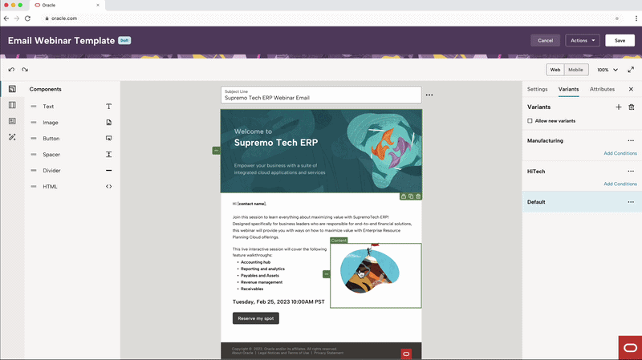
Junior Marketers choose from a pre-approved batch of on-brand images — curated by the Senior Marketer.
A left-panel GenAI assistant lets Field Marketers generate copy and swap images — but only within the boundaries the Senior Marketer has defined. On-brand AI image generation pulls from an approved asset library, so creativity never comes at the cost of compliance.
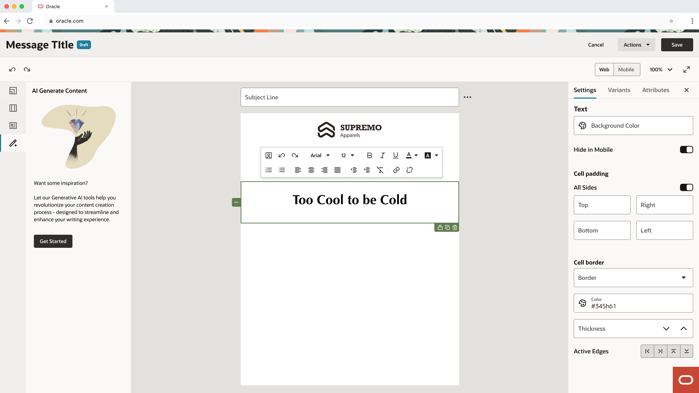
GenAI copy generation — prompt-based content creation within the canvas.

AI image replacement — pulling from the Senior Marketer's approved asset library.
08 — Reflection
The project was successfully handed to the development team at the end of the 12-week internship. While long-term metrics were unavailable, stakeholder validation confirmed the "Locked by Default" approach better served enterprise governance needs.